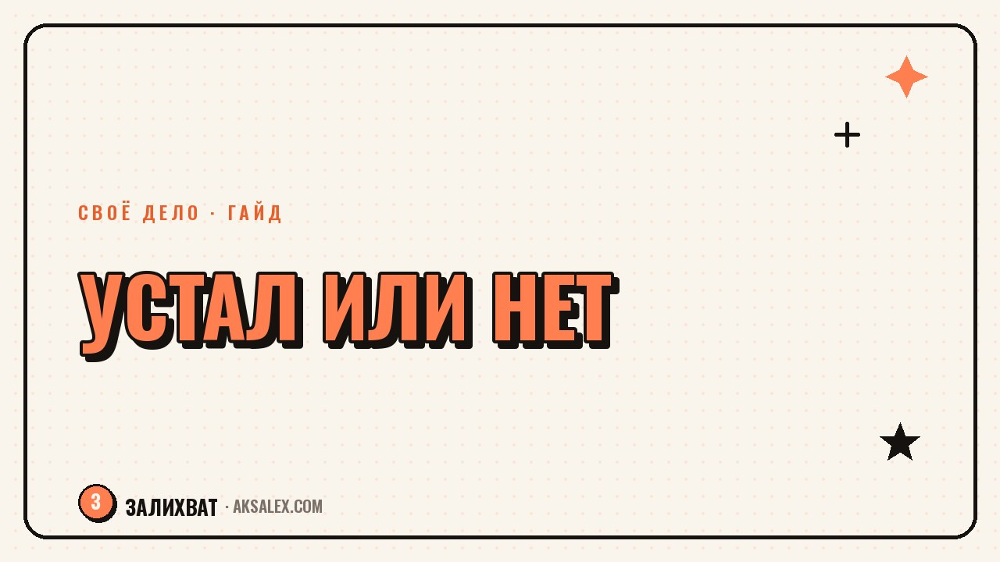

Устал или разлюбил дело: как понять разницу

Бывает момент, когда дело, которое раньше радовало, вдруг начинает вызывать только раздражение. Руки не хотят садиться за работу, идеи не приходят, а вопрос «а моё ли это дело» звучит в голове всё чаще. Проблема в том, что обычная усталость и настоящее разочарование в деле выглядят почти одинаково снаружи, а решения нужны разные. Разберём, как отличить одно от другого и что делать, пока не принято решение, о котором потом будешь жалеть.
Почему усталость и разлюбленность путают
Оба состояния дают один и тот же сигнал мозгу: не хочу этим заниматься. Но причины разные - в одном случае ресурс исчерпан временно и восстанавливается отдыхом, в другом дело на самом деле перестало отвечать твоим ценностям или интересам, и отдых ничего не меняет.
Путаница дорого стоит: если бросить дело, которое на самом деле любишь, только из-за усталости, можно потом долго жалеть о решении. А если продолжать дело, которое разлюбила, из страха признать это, усталость будет только нарастать и перейдёт в выгорание.
Зачем вообще разделять эти состояния
Разные причины требуют разных действий: усталость лечится отдыхом и паузой, а разлюбленность - честным разговором с собой о том, что изменилось в деле или в тебе. Если лечить усталость отдыхом там, где дело реально себя исчерпало, пауза ничего не исправит, и раздражение вернётся сразу после отпуска.
Признаки обычной усталости
Усталость чаще всего накопленная и привязана к конкретному периоду: много задач подряд, недосып, нет выходных. Она снимается отдыхом и возвращается интерес к делу, как только силы восстановились.
Как узнать усталость
- После выходного или отпуска снова появляется желание вернуться к делу.
- Раздражение вызывает конкретная перегрузка, а не дело в целом - например, слишком много встреч, а не сама профессия.
- При мысли о любимой части дела (не о рутине вокруг) остаётся тёплое чувство.
- Физическое истощение ощущается сильнее, чем эмоциональная пустота.
Если большинство пунктов откликается - скорее всего, дело не разлюблено, а ресурс временно на нуле. Нужна пауза, а не пересмотр всей жизни.
Признаки того, что дело разлюбила
Разлюбленность не проходит после отдыха. Ты возвращаешься из отпуска отдохнувшей физически, но мысль о деле всё равно вызывает тяжесть, а не желание вернуться. Иногда это связано не с самим делом, а с тем, что изменились твои ценности, обстоятельства жизни или сфера выросла в сторону, которая тебе не близка.
Второй признак - исчезает интерес даже к той части дела, которая раньше была любимой. Если раньше больше всего радовал процесс создания, а не результат, и этот процесс теперь не вызывает ничего, кроме скуки - это сигнал глубже, чем усталость.
Усталость хочет отдыха. Разлюбленность хочет перемен. Пока не разобралась, какая из них у тебя - любое решение будет случайным.
Что делать, пока не принято решение
Самая частая ошибка - принимать решение бросить дело в момент самого сильного раздражения, когда объективно оценить ситуацию сложно. Лучше дать себе срок - две-четыре недели полноценного отдыха - и только потом возвращаться к вопросу.
Три шага перед решением
- Возьми реальную паузу минимум на неделю, без чувства вины и без «а вдруг я теряю клиентов».
- После паузы честно запиши, что конкретно вызывает тяжесть: рутина, клиенты, сама суть дела или внешние обстоятельства.
- Попробуй временно изменить один конкретный элемент (формат работы, график, часть обязанностей) и понаблюдай за реакцией.
Если после паузы и небольших изменений интерес хотя бы частично возвращается - это была усталость. Если состояние не меняется месяцами, несмотря на отдых и корректировки, - дело скорее всего действительно разлюблено, и пора честно признать это себе.
Таблица: усталость или разлюбленность
Для быстрой сверки - сравнение ключевых признаков двух состояний.
| Признак | Усталость | Разлюбленность |
|---|---|---|
| Реакция на отдых | Интерес возвращается | Состояние не меняется |
| Что вызывает тяжесть | Перегрузка, рутина вокруг | Суть дела, сам процесс |
| Любимая часть дела | Радует даже сейчас | Не вызывает отклика |
| Как долго длится | Недели | Месяцы без изменений |
| Что помогает | Пауза, сон, границы | Пересмотр направления |
Если это всё-таки разлюбленность
Признать, что дело разлюблено, не значит сразу всё бросить и остаться без плана. Полезно сначала понять, что именно исчезло - сама область или только конкретный формат работы в ней. Иногда дизайнер устаёт не от дизайна, а от фриланса с его хаотичными сроками, и переход в штат решает вопрос без смены профессии.
Если разлюбленность касается самой сути дела, не нужно вины за это - интересы меняются, и это нормальная часть жизни, а не предательство прежней версии себя. Дай себе время на новый поиск, не требуя мгновенной ясности, что делать дальше.
Частые вопросы
Сколько нужно отдыхать, чтобы отличить усталость от разлюбленности
Минимум одна-две недели полноценного отдыха без мыслей о деле, а лучше три-четыре. Если раньше этого срока появляются выводы, они скорее всего ещё под влиянием усталости, а не честной оценки ситуации.
Что если устала не от самого дела, а от конкретного клиента или проекта
Это чаще обычная усталость, привязанная к ситуации, а не к делу целиком. Стоит разобраться именно с этим проектом или клиентом, прежде чем делать выводы о профессии в целом.
Нормально ли разлюбить дело, которым занимаешься много лет
Да, интересы и ценности меняются с возрастом и опытом, и это не редкость даже после десяти-пятнадцати лет в профессии. Это не ошибка прошлого выбора, а естественное развитие человека.
Можно ли вернуть интерес к делу, если оно действительно разлюблено
Иногда помогает смена формата - не области, а способа в ней работать: другой масштаб проектов, другая команда, другая роль. Но если и это не возвращает интереса за несколько месяцев, честнее признать, что путь в этой сфере завершён.
Как не бросить дело сгоряча из-за временной усталости
Установи для себя правило не принимать решений об увольнении или закрытии дела в день сильного раздражения. Дай себе заранее оговорённый срок паузы и возвращайся к вопросу только после него, на свежую голову.
Раз тема оказалась полезной, вот что почитать следующим. Реалистичный план, как вести любимое дело параллельно с работой - без ночей без сна и выгорания.
Читать статью →а не вручную